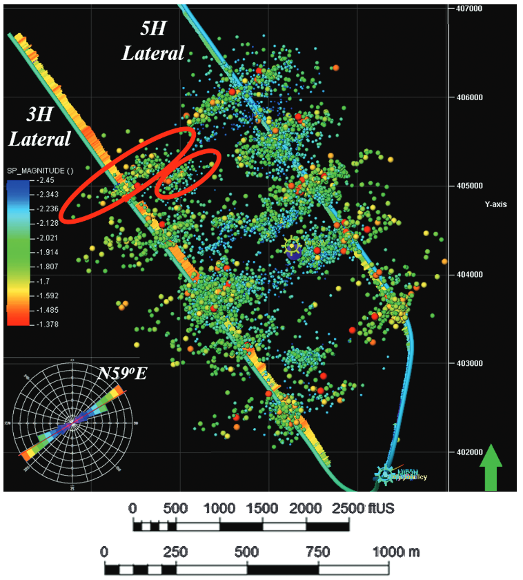

Next: 5.6 Problems Up: 5. Stresses on Faults Previous: 5.4 Determination of normal Contents
The previous section shows how to calculate the normal effective stress and shear stress components on an arbitrary oriented plane given the in-situ state of stress.
A critically-stressed fracture (or fault) has shear stress and normal effective stress components with a ratio
which approaches the friction coefficient  0.6-1.0.
The fracture is said to be “critically stressed” because it is practically failing in shear.
Such fractures -if they exhibit dilation during sliding- tend to be more hydraulically conductive than fractures with low
ratio (on the right of the Mohr circle and far left close to
0.6-1.0.
The fracture is said to be “critically stressed” because it is practically failing in shear.
Such fractures -if they exhibit dilation during sliding- tend to be more hydraulically conductive than fractures with low
ratio (on the right of the Mohr circle and far left close to  - Fig. 5.23).
Natural fractures can help fluid drainage.
Traditionally, fracture permeability has been thought to be dependent on effective normal stress only
- Fig. 5.23).
Natural fractures can help fluid drainage.
Traditionally, fracture permeability has been thought to be dependent on effective normal stress only
 .
The concept of critically stressed fractures adds one more level of dependency to fracture permeability such that it is also a function of shear stress
.
The concept of critically stressed fractures adds one more level of dependency to fracture permeability such that it is also a function of shear stress
 .
.
If critically oriented fractures have higher permeability than non-critically oriented fractures, then, the state of stress determines which fractures are hydraulically conductive and also determines permeability anisotropy in a fractured reservoir. Fractures that have an orientation that favors high ratio are said to be “critically oriented” 5.23. This dependence is particularly important in unconventional formations where fracture permeability plays a critical role in determining production rates. The orientation of such fractures is critical for determining the orientation of a horizontal wellbore that minimizes the least resistance path of fluids from the rock matrix to the wellbore.
Fractures can also create and reactivate during hydraulic fracturing. The dots in Fig. 5.22 indicate micro-to-nano earthquakes hypocenters (at depth) triggered by rock failure during hydraulic fracturing. Hydraulic fracturing imparts changes of stresses that reactivate some critically oriented fractures in tight reservoirs. These reactivated fractures are useful to contribute to increase the permeability of tight reservoirs at the large scale (also known as Stimulated Reservoir Volume SRV). Some of these created fractures may close and seal-off fairly quickly upon depletion if not propped. Significant ongoing research addresses how to maintain the permeability of these fractures in the long-term.
 |
 |
The same reasoning applies to large faults. There are faults that may be more easily reactivated due to pore pressure changes because of their orientation with respect to the current state of stress (See subsection 5.5.4).
Tectonic plates drive movements of the Earth's crust (Fig. 5.24). High temperatures and high effective stresses at great depth favor ductile deformation. Low temperatures and low effective stresses in the near-surface favor brittle failure.
![\includegraphics[scale=0.55]{.././Figures/split/6-21.pdf}](img743.svg) |
As a result of tectonic movement, there is ubiquitous shear failure and faulting of the Earth's shallow crust. The frictional strength of faults limits the maximum magnitude of stresses imparted by tectonic strains (Figure 5.25). Hence, horizontal stresses are proportional to tectonic strains in the elastic region, but their maximum value is limited by fault strength.
![\includegraphics[scale=0.75]{.././Figures/split/InSituStresses-ElastoPlastic.pdf}](img744.svg) |
Because faults are cohesion-less, the frictional strength equation is simply:
 |
(5.15) |
(like sand, zero-intercept in the y-axis) where is the maximum effective principal stress, is the minimum effective principal stress, and
![$q=[1+\sin(\varphi)]/[1-\sin(\varphi)]$](img745.svg) is the anisotropy factor.
is the anisotropy factor.
The shear strength of the brittle crust has a direct implication in determining the maximum and minimum values of horizontal stresses for each stress regime once the tectonic strains are surpassed. Frictional equilibrium of the brittle crust implies that minimum and maximum attainable values of horizontal stresses are controlled by shear failure. Hence, for
 cannot be smaller than
cannot be smaller than
 , for
, for
 cannot be greater than
cannot be greater than
 , and for
cannot be greater than
, and for
cannot be greater than
 .
.
As a result, the assumption of limit frictional equilibrium permits estimating minimum and maximum horizontal stresses if effective stresses
or
are known.
PROBLEM 5.13: A given site onshore is known to be subjected to a NF stress regime and hydrostatic pore pressure. Calculate the total horizontal minimum stress  at a depth of 5,000 ft assuming frictional equilibrium of faults and friction angle
at a depth of 5,000 ft assuming frictional equilibrium of faults and friction angle
 .
.
SOLUTION
The solution is a lower bound estimation of for normal faulting stress regime dictated by frictional equilibrium.


PROBLEM 5.14: A given site onshore is known to be subjected to a RF stress regime. Hard pressure is detected at 2,000 ft with
 . Calculate the total maximum horizontal stress
. Calculate the total maximum horizontal stress  at this depth assuming frictional equilibrium of faults and friction angle
.
at this depth assuming frictional equilibrium of faults and friction angle
.
SOLUTION
The solution is an upper bound for .

 psi/ft
psi/ft ft
ft psi
psi
 is the minimum principal since the site is subjected to reverse faulting regime.
Given the overpressure parameter, pore pressure is
is the minimum principal since the site is subjected to reverse faulting regime.
Given the overpressure parameter, pore pressure is
 psi
psi psi
psi
and effective vertical stress is
 psi
psi psi
psi psi
psi
Finally, the maximum effective horizontal stress depends on the vertical effective stress (reverse faulting regime), so that
 psi
psi psi
psi
 psi
psi psi
psi psi
psi
The bounding limits of minimum and maximum horizontal stress for a given vertical stress and pore pressure can be plotted through Zoback's (effective) stress polygon (Fig. 5.26). The colored lines represent the bounds for normal faulting stress regime (NF), strike-slip faulting stress regime (SS), and reverse faulting stress regime (RF).
![\includegraphics[scale=0.50]{.././Figures/split/6-24.pdf}](img763.svg) |
For example, the state of stress for a place with a stress regime that fluctuates from NF to SS with depth would plot at the intersection of NF and SS lines in the stress polygon (Fig. 5.27).
![\includegraphics[scale=0.60]{.././Figures/split/6-25.pdf}](img764.svg) |
Mapping of faults and fractures in the subsurface helps interpret the state of stress that caused such fractures.
In some cases the state of stress that caused such faults may be still acting today.
The example in Fig. 5.28 shows an example of strike-slip conjugate faults.
The maximum horizontal stress that caused these shear faults was aligned with the bisectrix of the two fault strikes, about E10 S.
S.
 |
Depletion and injection of fluids in the subsurface cause changes in pore pressure and therefore on effective stresses.
Fluid injection such as in hydraulic fracturing, water-flooding, and waste-water disposal can reach adjacent faults (if any) and decrease the effective normal stress
 acting on faults.
In hydraulic fracturing, the injection of fluids is temporary and limited to the fracture completion size.
In water-flooding, pressure build-up is limited by the producer wells.
In waste-water injection, the pressure build-up is controlled by the aquifer size, compressibility and compartmentalization.
acting on faults.
In hydraulic fracturing, the injection of fluids is temporary and limited to the fracture completion size.
In water-flooding, pressure build-up is limited by the producer wells.
In waste-water injection, the pressure build-up is controlled by the aquifer size, compressibility and compartmentalization.
![\includegraphics[scale=0.65]{.././Figures/split/6-FaultReactivation.pdf}](img765.svg) |
The change of stresses produced by increases of pore pressure assuming constant total vertical stress and negligible poroelastic effects is
 |
(5.16) |
The result is a shift of the Mohr circle to the left, closer to the shear failure or “reactivation” line.
The magnitude of change of pore pressure needed to reactivate a fault is (at least) equal to the horizontal distance between the point of the Mohr-circle of such fault and the failure line. Hence, a critically oriented fracture needs the lowest
 to reactivate.
to reactivate.
The reactivation of faults may result in induced seismicity.
The imparted change of fault permeability depends on the fault filling, known as fault gouge.
Both, induced seismicity and change in fault permeability depend on the failure properties of the fault gouge.
Brittle failure results in high energy release through induced seismicity and increases of fault permeability, while ductile failure results in low energy release through seismicity and decreases or minor increases of permeability.
An undesired consequence of fault reactivation is the loss of hydrocarbon trapping ability at fault structural traps (e.g., https://www.youtube.com/watch?v=OtJTI4nv1QI).
Figure 5.30 shows an example of induced seismicity with magnitude  in the Richter scale due to injection of carbon dioxide in the Mount Simon Sandstone.
The seismicity originates mostly from reactivation of faults below the reservoir formation in basement formations. The regional stress regime alternates between strike-slip and reverse (See Figure 2.24).
in the Richter scale due to injection of carbon dioxide in the Mount Simon Sandstone.
The seismicity originates mostly from reactivation of faults below the reservoir formation in basement formations. The regional stress regime alternates between strike-slip and reverse (See Figure 2.24).
![\includegraphics[scale=1.00]{.././Figures/split/DecaturCO2-MS.pdf}](img768.svg) |